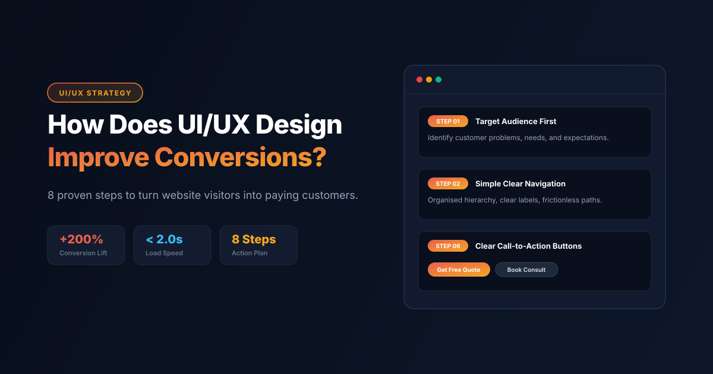

ForgeLab / Article
How Does UI/UX Design Improve Website Conversions?
Discover how thoughtful design can turn visitors into customers with a better website experience.

Introduction
A website is often the first interaction customers have with a business. A visually attractive website can create a good first impression, but design alone is not enough to turn visitors into customers. Visitors also need a smooth experience, clear information, simple navigation, and an easy way to take action.
This is where UI/UX design plays an important role. User Interface (UI) design focuses on the visual elements of a website, while User Experience (UX) design focuses on how easily visitors can use it.
A well-planned UI/UX design helps businesses build trust, improve usability, and guide visitors towards actions such as making a purchase, filling out a form, or contacting a business.
Understand Your Target Audience
The first step in effective UI/UX design is to understand the people who will use your website. Different audiences have different expectations, needs, and browsing habits. Before designing a website, businesses should identify their target customers, their problems, the information they need, and the actions they are expected to take.
At The Forge Lab, we begin by understanding your business goals, target audience, and customer expectations. This helps us plan website layouts and user experiences that connect with visitors while supporting your business objectives.
Create Simple Website Navigation
Website navigation helps visitors move between different pages and find information without confusion. Complicated menus, unclear labels, and poorly organised pages can make visitors leave before exploring your services or products.
A user-friendly navigation structure should include clear menu labels, organised categories, easy access to important pages, and a logical page structure.
At The Forge Lab, we focus on creating organised website structures with simple navigation and clear page layouts. We make important information, services, and contact options easy to find so visitors can explore your website without unnecessary effort.
Build an Attractive and Consistent User Interface
User Interface design includes the visual elements visitors interact with, such as colours, typography, buttons, images, icons, and layouts. A consistent interface makes a website look professional and helps visitors understand its content. Too many colours, different font styles, and crowded layouts can make the experience confusing.
Important UI design elements include readable typography, consistent brand colours, balanced spacing, clear buttons, and relevant images.
The Forge Lab creates modern and visually consistent website interfaces that reflect your brand identity. We focus on clean layouts, readable content, and practical design elements to give visitors a professional and comfortable browsing experience.
Improve Website Loading Speed
Website speed is an important part of user experience. Visitors may leave when pages take too long to load, particularly when browsing on mobile devices or slower internet connections. A fast website makes it easier for users to access information and interact with its features.
Businesses can improve website performance through image compression, optimised code, reduced unnecessary scripts, efficient plugins, and suitable hosting solutions.
At The Forge Lab, we develop performance-focused websites with attention to clean code, image optimisation, and efficient functionality. Our goal is to create websites that load smoothly and provide visitors with a better browsing experience.
Make the Website Mobile-Friendly
Many visitors access websites through smartphones and tablets. A website that works well only on desktop can create problems for mobile users. Responsive web design allows website layouts to adjust to different screen sizes while maintaining usability.
A mobile-friendly website should have readable text, properly sized images, easy-to-tap buttons, simple navigation, and forms that work smoothly on smaller screens.
The Forge Lab builds responsive websites designed for desktop, tablet, and mobile devices. We focus on maintaining consistent functionality, visual quality, and usability across different screen sizes so customers can interact with your website from any device.
Add Clear Call-to-Action Buttons
A call-to-action (CTA) tells visitors what to do next. Without clear direction, visitors may explore a website but leave without contacting the business or completing a purchase.
Effective CTA examples include:
CTA buttons should be easy to notice, use action-oriented wording, and appear at relevant points throughout the website.
At The Forge Lab, we include clear and relevant calls to action within website layouts. We help businesses guide visitors towards meaningful actions, such as making enquiries, requesting services, booking consultations, or completing purchases.
Build Trust Through Website Design
Visitors are more likely to consider a business when its website looks professional and provides useful information. Trust is especially important for businesses that collect customer details or accept online payments.
Businesses can build trust by including genuine customer testimonials, clear contact information, detailed service descriptions, secure website connections (HTTPS), transparent policies, and relevant business information.
The Forge Lab focuses on creating professional website experiences that communicate your brand clearly. We help organise business information, service details, and customer-focused content so visitors can understand your offerings and make informed decisions.
Test, Measure, and Improve Website Performance
UI/UX design does not end when a website goes live. Regular testing and analysis help identify problems and opportunities for improvement. Businesses should monitor website performance to understand how visitors interact with different pages and where they face difficulties.
Important performance indicators include conversion rates, form submissions, CTA clicks, page loading performance, mobile usability, and visitor behaviour.
At The Forge Lab, we believe website improvement should be an ongoing process. Through practical website development and digital solutions, we help businesses identify usability issues, review website performance, and make improvements based on their goals and available data.
Frequently Asked Questions
1. What is UI/UX design?
UI design focuses on a website's visual appearance, while UX design focuses on usability and the overall experience visitors have when using it.
2. How does UI/UX design improve website conversions?
It improves navigation, readability, trust, and ease of use, helping visitors complete actions such as purchases, enquiries, and form submissions.
3. Why is responsive web design important?
Responsive design allows a website to work across mobile phones, tablets, and desktops, providing a consistent experience on different screen sizes.
4. What are the main elements of good UI/UX design?
The main elements include simple navigation, readable typography, consistent layouts, responsive design, clear CTAs, and accessible content.
5. How does The Forge Lab help with UI/UX design?
The Forge Lab helps businesses with user-focused website design, responsive development, organised navigation, visual consistency, and practical website improvements.